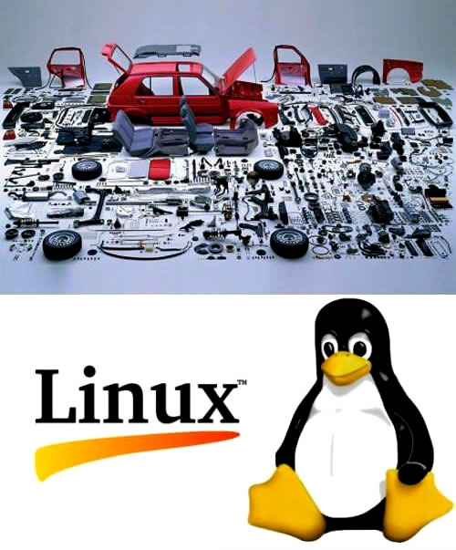

前言
在这篇定期却鲜少更新的文章里，无疑有着整个互联网上有关 Linux 发行版的问题 最全的列表，我们仅讨论这些发行版的主要问题和缺点（这些问题和缺点或许是一些人说 Linux 发行版还没在桌面领域准备好的原因）。而大家也应该要记得，Linux 在一些方面要比其他操作系统优秀：一个发行版中有出色的软件包管理，开箱即有的多平台和多架构支持，而且通常具有出色的稳定性，没有广泛传播的病毒或者恶意软件，几乎从不需要重装完整系统。此外，Linux 的可定制性也相当高，容易脚本化，而且它是自由的，就像啤酒一样。
笔者再重申一下, 本文主要关注的是 Linux 发行版，但是下文列出的许多问题 同样会影响 Linux 内核（即各种 Linux 发行版和 Android 的核心）。
这篇文章不是 特意要拿 Windows 和 Linux 做比较，但是读者还是会发现文中拿了 Windows 或者 macOS 进行比较以作为参考（毕竟，这两者的市场占有率要比 Linux 高一个数量级）。下文列出的大多数问题本质上是技术性的，但是也有些是“政治性”的（这不是笔者的观点 —— 有别的人是这么说的）—— 例如，当商业公司拒绝公布或部分公布硬件数据表时，Linux 用户会因此无法获得全部的功能、或者个别驱动程序存在问题，而这在 Linux 社区中几乎没人可以解决。
笔者还想要说清楚一件事情 —— Windows，在某些方面，甚至比 Linux 更糟糕，并且它也有着自己的一些关键问题。笔者要着重点出 Windows 以下几个极具破坏性的问题： • Windows 是迂腐的； • 没有强制的文件系统和注册表层次结构（笔者还没有找到一个可以严格完全干净地卸载的应用程序）； • 没有真正的安全模式，用户就是系统管理员（因此病毒/恶意软件肆虐 —— 大多数用户不了解也不会去了解 UAC 警告）； • 没有良好的软件打包机制（MSI 是脆弱的令人憎恶的产物）； • 没有系统范围的更新机制（包括第三方软件）； • 并且 Windows 非常难以调试； • 启动问题通常是致命的并且无法解决的，除非从头开始重新安装； • Windows 对硬件依赖性较高（尤其是从 UEFI 运行时）； • SSD 磁盘上的文件系统碎片过多； • 更新非常不可靠，而且还会浪费磁盘空间等。
可能你已经很多次听过这样的说法：Linux 已经通过 Android 征服了整个世界，因为后者运行在大多数智能手机上（确实有少数专用计算机安装着 Android，但它们不是台式机）。但是要记住两件事情 —— 首先，Android 不是 Linux（此外，有人见过谁在自己的台式机或笔记本上运行 Android 吗？）。Android 唯一包含的 Linux 的组件是后者之内核（而且还是完全由谷歌维护和支持的固定的几个旧版本 (截至 2016 年有 3.0.x、3.4.x 或 3.10.x)。其次，Android 并不是桌面级的操作系统，而是用于手机、平板电脑和其他触屏设备的操作系统。所以，这篇文章和 Android 没有关系，它涉及成群的 Linux 发行版和这些发行版所包含的开源软件（以下简称为“发行版”）。
随时欢迎在评论部分表达不满。
注意：
列表上标绿的部分表示已部分解决，不是很致命性、有问题，或者它们有解决方案。
这份列表迫切需要重新规划，因为里面有些问题是至关重要的，有些不是。作为一名（Linux）用户，你可能很幸运地不会遇到这些问题中的任何一个（如果你有对口的硬件，永远不会折腾坏自己的系统，并且仅仅使用发行版包含的数量相当有限的软件）。
在开始阅读本文前，有一些重要的事情需要考虑：
- 如果你相信 Linux 十全十美，请关掉这个网页。
- 如果你觉得任何对 Linux 的批评都只是毫无根据的谩骂，那请关掉这个网页。
- 如果你认为这篇文章的目的是要表达“没有什么在 Linux 是能正常工作的” 或者 “Linux 几乎没法使用”这样的观点，那就错了，还是请你离开吧。
- 如果你相信 Linux 和 Linux 用户可以在没有商业软件和游戏的情况下，也能正常工作或生活，请关掉这个网页。
- 如果你觉得笔者是在这推销 Windows 或者 macOS，请关掉这个网页。
- 如果你认为笔者我是在这里散播有关 Linux 的谣言（甚至觉得是在贩卖恐慌，挑拨观点）的话，恕我丑话，请你马上滚蛋不要再来！吃饱了没事干的话，请把气焰烧在战争和中伤别人上吧。
请谨记，这份列表的目的，是为了说清楚 Linux 需要修复的问题，而不是找它的茬。
桌面级 Linux 的问题和主要缺陷
（为一些厌恶阅读长文的读者考虑，下面有一份“太长不看”的摘要版）。 所以 Linux 不好的地方是 ...
- 硬件支持：
- Video accelerators/acceleration (also see the X system section).
- ! NVIDIA Optimus technology which is used in most laptops often doesn't work well in Linux. People struggle with screen tearing, new kernel releases, etc.
- ! Open source drivers have certain, sometimes very serious problems (Intel-! and AMD):
- ! The open source NVIDIA driver is much slower (up to twenty times) than its proprietary counterpart due to incomplete power management (it's solely NVIDIA's fault which refuses to provide the Nouveau project with the required firmware).
- ! The open source NVIDIA driver, nouveau, does not properly and fully support power management features and fan speed management (it's mostly NVIDIA's fault).
- ! Proprietary NVIDIA driver has a nasty habit of keeping your GPU at the highest performance level which significantly increases power consumption, and, in case of mobile users, significantly decreases battery life. NVIDIA was made aware of this bug in July 2017 and though they've made improvements in 2019, the issue still persists.
- !! According to an anonymous NVIDIA engineer, "Nearly Every Game Ships Broken ... In some cases, we're talking about blatant violations of API rules ... There are lots of optional patches already in the driver that are simply toggled on or off as per-game settings, and then hacks that are more specific to games ... Ever wondered why nearly every major game release is accompanied by a matching driver release from AMD and/or NVIDIA?". The open source community simply doesn't have the resources to implement similar hacks to fix broken games, which means that at least for complex AAA games, proprietary drivers will remain the only option.
- ! Linux drivers are usually much worse (they require a lot of tinkering, i.e. manual configuration) than Windows/Mac OS drivers in regard to support of non-standard display resolutions, very high (a.k.a. HiDPI) display resolutions or custom refresh rates.
- ! Under Linux, setting multi-monitor configurations especially using multiple GPUs running binary NVIDIA drivers can be a major PITA.
- (Not an issue for most users but still) GPU voltage tuning will most likely never be supported for NVIDIA GPUs which means there's no proper overclocking, or underclocking to save power.
- !! Extremely poor state and usability of the tools for monitoring and controlling GPU parameters like frequency, voltage and fan curves (akin to MSI Afterburner or GPU-Z in Windows), performance overlay (Fraps, RivaTuner Statistics Server), recording game sessions and streaming.
- Audio subsystem:
- PulseAudio is unsuitable for multiuser mode - yes, many people share their PCs (an untested solution can be found here).
- ! No reliable echo cancellation (if you use a normal microphone and speakers in many cases you won't be able to use Skype and other VoIP services normally). Windows, Android and MacOS implement it on a system level. There's a solution for PulseAudio - hopefully it'll be enabled by default in the future or/and there'll be an easier way to use it.
- Hardly a dealbreaker but then audio professionals also want to use Linux: high definition audio support (>=96KHz, >=24bit) is usually impossible to set up without using console.
- Various audio effects like volume normalization are not included or enabled by default by most distros.
- Printers, scanners and other more or less peripheral devices:
- There are still many printers which are not supported at all or only barely supported - some people argue that the user should research Linux compatibility before buying their hardware. What if the user decides to switch from Windows to Linux when he/she already has some hardware? When people purchase a Windows PC do they research anything? No, they rightly assume everything will work out of the box right from the get-go.
- Many printer's features are only implemented in Windows drivers.
- Some models of scanners and (web-)cameras are still inadequately supported (again many features from Windows drivers are missing) or not supported at all.
- Incomplete or unstable drivers for some hardware. Problems setting up some hardware (like touchpads in newest laptops, web cameras or Wi-Fi cards, for instance, 802.11ac and USB Wi-Fi adapters are barely supported under Linux and in many cases they are just unusable). Broadcom network adapters are often usable out of the box for a lot of Linux distors (to be honest the company seemingly hates Open Source).
- Laptops, tablets, 2 in 1 devices, etc.:
- Incomplete or missing support for certain power-saving features modern laptops employ (like e.g. PCIe ASPM, proper video decoding acceleration, deep power-saving states, etc.) thus under Linux you won't get the same battery life as under Windows or MacOS and your laptop will run a lot hotter.
Jupiter(discontinued unfortunately), see Advanced Power Management for Linux. Edit July 19, 2018: If you're running supported hardware with Fedora 28 and Linux 4.17 and later, power management must be excellent under Linux aside from watching videos (both online and offline: video decoding acceleration in Linux is still a very sad story). - !! Oftentimes you just cannot use new portable devices in Linux because proper support for certain features gets impletemented too late and distros pick up this support even later.
- Laptops/notebooks often have special buttons and features that don't work (e.g. Fn + F1-F12 combination or special power-saving modes).
- Incomplete or missing support for certain power-saving features modern laptops employ (like e.g. PCIe ASPM, proper video decoding acceleration, deep power-saving states, etc.) thus under Linux you won't get the same battery life as under Windows or MacOS and your laptop will run a lot hotter.
- ! Resume after suspend in Linux is unstable and oftentimes doesn't work.
- ! Often regressions are introduced in the Linux kernel, when some hardware stops working inexplicably in new kernel versions. I have personally reported two serious audio playback regressions, which have been consequently resolved, however most users don't know how to file bugs, how to bisect regressions, how to identify faulty components.
- Video accelerators/acceleration (also see the X system section).
- Software support:
- X system (current primary video output server in Linux):
- X.org is largely outdated, unsuitable and even very much insecure for modern PCs and applications.
- No high level, stable, sane (truly forward and backward compatible) and standardized API for developing GUI applications (like core Win32 API - most Windows 95 applications still run fine in Windows 10 - that's 24 years of binary compatibility). Both GTK and Qt (incompatible GTK versions 1, 2, 3, 4 and incompatible Qt versions 4, 5, 6 just for the last decade) don't strive to be backwards compatible. The Qt company also changed the licensing model for their toolkit which makes using the library under Linux problematic to say the least.
- ! Keyboard shortcut handling for people using local keyboard layouts is broken (this bug is now 15 years old).
- ! X.org doesn't automatically switch between desktop resolutions if you have a full screen application with a custom resolution running - strangely some Linux developers oppose to the whole idea of games on Linux.
But since Linux is not a gaming platform and no one is interested in Linux as a gaming platform this problem's importance is debatable. Valve has released Steam for Linux and they are now porting their games for Linux - but that's a drop in the bucket. - ! X.org doesn't restore gamma (which can be perceived as increased brightness) settings on application exit. If you play Valve/Wine games and experience this problem run `xgamma -1` in a terminal. You can thank me by clicking the ad at the top of the page ;-)
- ! Scrolling in various applications causes artifacts.
- ! X.org allows applications to exclusively grab keyboard and mouse input. If such applications misbehave you are left with a system you cannot manage, you cannot even switch to text terminals.
- ! Keyboard handling in X.org is broken by design - when you have a pop up or an open menu, global keyboard shortcuts/keybindings don't (GTK) work (QT).
- ! For VM applications keyboard handling is incomplete and passing keypresses to guest OS'es is outright broken.
- ! X.org architecture is inherently insecure - even if you run a desktop GUI application under a different user in your desktop session, e.g. using sudo and xhost, then that "foreign" application can grab any input events and also make screenshots of the entire screen.
- ! X.org server currently has no means of permanently storing and restoring settings changed by the user (xrender settings, Xv settings, etc.). NVIDIA and ATI proprietary drivers both employ custom utilities for this purpose.
- !! X.org has no means of providing a tear-free experience, it's only available if you're running a compositing window manager in the OpenGL mode with vsync-to-blank enabled.
- !! X.org is not multithreaded. Certain applications running intensive graphical operations can easily freeze your desktop (a simple easily reproducible example: run Adobe Photoshop 7.0 under Wine, open a big enough image and apply a sophisticated filter - see your graphical session die completely until Photoshop finishes its operation).
- ! There's currently no way to configure mouse scroll speed/acceleration under X.org. Some mice models scroll erratically under X.org.
- There's no way to replace/upgrade/downgrade X.org graphics drivers on the fly (simply put - to restart X server while retaining a user session and running applications).
- No true safe mode for the X.org server (likewise for KMS - read below). Misconfiguration and broken drivers can leave you with a non-functional system, where sometimes you cannot access text virtual consoles to rectify the situation (in 2013 it became almost a non-issue since quite often nowadays X.org no longer drives your GPU - the kernel does that via KMS).
- Adding custom monitor modelines in Linux is a major PITA.
- X.org does not support different scaling modes for different monitors.
- X.org totally sucks (IOW doesn't work at all in regard to old applications) when it comes to supporting tiled displays, for instance 4K displays (Dell UP3214Q, Dell UP2414Q, ASUS PQ321QE, Seiko TVs and others). This is yet another architectural limitation.
- HiDPI support is often a huge issue (many older applications don't scale at all).
- ! Fast user-switching (and also concurrent users' sessions) under X.org works very badly and is implemented as a dirty hack: for every user a new X.org server is started. It's possible to login twice under the same account while not being able to run many applications due to errors caused by concurrent access to the same files. Fast user switching is best implemented in KDE followed by Gnome.
Related problems:
1) Concurrently logged in users cannot access the same USB flash drive(s).
2) There are reports that problems exists with configuring audio mixer volume levels.
- Wayland:
- !! Applications (or GUI toolkits) must implement their own font antialiasing - there's no API for setting system-wide font rendering. Most sane and advanced windowing systems work exactly this way - Windows, Android, Mac OS X. In Wayland all clients (read applications) are totally independent.
- !! Applications (or GUI toolkits) must implement their own DPI scaling.
- The above issues are actually the result of not having one unified graphical toolkit/API (and Wayland developers will not implement it). Alas, no one is currently working towards making existing toolkits share one common configuration for setting font antialiasing, DPI scaling and windows shadowing. At least in theory these issues can be easily solved, in practice we already have three independent toolkits for Wayland (GTK3/Qt5/Enlightenment).
- !! Wayland works through rasterization of pixels which brings about two very bad critical problems which will never be solved:
Firstly, forget about performance/bandwidth efficient RDP protocol (it's already implemented but it works by sending the updates of large chunks of the screen, i.e. a lot like old highly inefficient VNC), forget about OpenGL pass-through, forget about raw compressed video pass-through. In case you're interested all these features work in Microsoft's RDP.
Secondly, forget about proper output rotation/scaling/ratio change.
- !! Wayland doesn't allow XWayland applications to change display resolution which could make running games slower as the compositor needs to upscale each game frame. Also software upscaling might not be the best option.
- !! Screensharing doesn't yet work out of the box (likely to be fixed in 2020).
- !! Wayland lacks APIs for global keyboard shortcuts.
- !! Wayland doesn't allow applications to exclusively grab mouse/keyboard which is required for games and applications like VMs.
- !! Wayland lacks APIs for sending remote input which makes Wayland unsuitable for remote desktoping.
- !! Applies to the X server/protocol as well: neither X.org, nor Wayland offer a way to extend/modify window's title bars and File Open/Save dialogs. This is a very powerful feature which can be very useful in many situations. Again it's a result of the fact that there's no unified toolkit and no unified window manager (or protocol).
- !! Wayland compositors don't have a universal method of storing and configuring screen/session/keyboard/mouse settings.
- Currently there's no standard way to remap keys under Wayland.
- XWayland refresh rate is locked to 60Hz - that's actually a serious problem since most games for Linux use the X11 protocol.
- Wayland applications cannot run without a Wayland compositor and in case it crashes, all the running apps die. Under X.org/Microsoft Windows there's no such issue.
- An assortment of various other general and KDE specific issues.
- Font rendering (which is implemented via high level GUI libraries) issues:
- ! ClearType fonts are not properly supported out of the box. Even though the ClearType font rendering technology is now supported, you have no means of properly tuning it thus ClearType fonts from Windows look ugly.
- Quite often default fonts look ugly, due to missing good (catered to the LCD screen - subpixel RGB full hinting) default fontconfig settings.
- Font antialiasing settings cannot be applied on-the-fly under many DEs. This issue is impossible to solve unless we have a high level GUI library which is shared between all tooklits and desktop environments.
- The Linux kernel:
- ! The kernel cannot recover from video, sound and network drivers' crashes (I'm very sorry for drawing a comparison with Windows Vista/7/8/10 where this feature has been implemented for ages and works beautifully in a lot of cases).
- KMS exclusively grabs video output and disallows VESA graphics modes (thus it's impossible to switch different versions of graphics drivers on the fly).
- KMS video drivers cannot be unloaded or reloaded.
- !! KMS has no safe mode: sometimes KMS cannot properly initialize your display and you have a dead system you cannot access at all (a kernel option "nomodeset" can save you, but it prevents KMS drivers from working at all - so either you have 80x25 text console or you have a perfectly dead display).
- Traditional Linux/Unix (ext4/reiser/xfs/jfs/btrfs/etc.) filesystems can be problematic when being used on mass media storage.
- File descriptors and network sockets cannot be forcibly closed - it's indeed unsafe to remove USB sticks without unmounting them first as it leads to stale mount points, and in certain cases to oopses and crashes. For the same reason you cannot modify your partitions table and resize/move the root partition on the fly.
- In most cases kernel crashes (= panics) are invisible if you are running an X session. Moreover KMS prevents the kernel from switching to plain 640x480 or 80x25 (text) VGA modes to print error messages. As of 2020 there's work underway to implement kernel error logging under KMS.
- !! Very incomplete hardware sensors support, for instance, HWiNFO64 detects and shows ten hardware sensor sources on my average desktop PC and over fifty sensors, whilst lm-sensors detect and present just four sources and twenty sensors. This situation is even worse on laptops - sometimes the only readings you get from lm-sensors are cpu cores' temperatures.
- ! A number (sometimes up to dozens) of regressions in every kernel release due to the inability of kernel developers to test their changes on all possible software and hardware configurations. Even "stable" x.y.Z kernel updates sometimes have serious regressions.
- ! The Linux kernel is extremely difficult and cumbersome to debug even for the people who develop it.
- Under some circumstances the system or X.org's GUI may become very slow and unresponsive due to various problems with video acceleration or lack of it and also due to notorious bug 12309 - it's ostensibly fixed but some people still experience it). This bug can be easily reproduced under Android (which employs the Linux kernel) even in 2020: run any disk intensive application (e.g. under any Android terminal 'cat /dev/zero > /sdcard/testfile') and enjoy total UI unresponsiveness.
- !! Critical bug reports filed against the Linux kernel often get zero attention and may linger for years before being noticed and resolved. Posts to LKML oftentimes get lost if the respective developer is not attentive or is busy with his own life.
- The Linux kernel contains a whole lot of very low quality code and when coupled with unstable APIs it makes development for Linux a very difficult error prone process.
- The Linux kernel forbids to write to CPU MSRs in secure UEFI mode which makes it impossible to fine-tune your CPU power profile. This is perfectly possible under Windows 10.
- Memory management under Linux leaves a lot to be desired: under low memory conditions your system may become completely unresponsive. This can be alleviated by certain user-space daemons like earlyoom.
- Problems stemming from the vast number of Linux distributions:
- ! No unified configuration system for various system daemons, computer settings and devices. The issue has been more or less solved in regard to network settings (after distors standardized on NetworkManager) and system services (due to systemd which has become a standard).
- ! No unified installer/package manager/universal packaging format/dependency tracking across all distros (The GNU Guix project, which is meant to solve this problem, is now under development - but we are yet to see whether it will be incorporated by major distros). Consider RPM (which has several incompatible versions, yeah), deb, portage, tar.gz, sources, etc. It adds to the cost of software development.
- ! Distros' repositories do not contain all available open source software (libraries' conflicts don't even allow that luxury). The user should never be bothered with using ./configure && make && make install (besides, it's insecure, can break things in a major way, and it sometimes simply doesn't work because the user cannot install/configure dependencies properly). It should be possible to install any software by downloading a package and double clicking it (yes, like in Windows, but probably prompting for a user/administrator password).
- ! Applications development is a major PITA. Different distros can use a) different library versions, b) different compiler flags, c) different compilers. This leads to a number of problems raised to the third power. Packaging all dependent libraries is not a solution, because in this case your application may depend on older versions of libraries which contain serious remotely exploitable vulnerabilities.
- ! Two most popular open source desktops, KDE and Gnome, can configure only a few settings by themselves thus each distro creates its own bicycle (applications/utilities) for configuring a boot loader/firewall/users and groups, services, etc.
- Linux is a hell for ISP/ISV support personnel. Within the organization you can force a single distro on anyone, but it cannot be accomplished when your clients have the freedom to choose.
- Linux as a gaming platform issues (it's great we now have Proton/Wine/DXVK but):
- ! No plug-and-play support for a lot of input devices like joysticks and steering wheels. Many require editing of cryptic configuration files.
- ! No universal simple to use GUI application which implements an on-screen HUD with CPU, GPU, RAM use, FPS and frame timing. A number of half-solutions exist, including using environment variables but they are not user-friendly. Luckily there's MangoHud which is yet to be included by major Linux distros and which is lacking GUI for configuration. At least it works and exists.
- ! No universal vendor-neutral alternative to MSI Afterburner - an app for monitoring, overclocking, downclocking/undervolting your GPU.
- ! Many anti-cheat protections fail to work under Linux. Besides in Linux it's near impossible to guarantee that game assets haven't been tinkered with (think of transparent walls for first-person competitive shooters like Counter Strike Global Offensive, Valorant or Apex Legends).
- ! No advanced Windows drivers features, like NVIDIA FreeStyle, low-latency input, FPS limiting, half VSync refresh rate and many many others.
- ! Performance/smoothness/stuttering issues due to the translation overhead between Win32 APIs/Direct3D and Linux APIs/Vulkan.
- ! It should be possible to configure pretty much everything via GUI (in the end Windows and Mac OS allow this) which is still not a case for some situations and operations.
- No polish and universally followed conventions. Different applications may have totally different shortcuts for the same actions, UI elements may be placed and look differently.
- X system (current primary video output server in Linux):
- Problems stemming from low Linux popularity and open source nature:
- ! Few software titles, inability to run familiar Windows software (some applications which don't work in Wine - look at the lines which contain the word "regression" - have zero Linux equivalents).
- ! No equivalent of some hardcore Windows software like ArchiCAD, 3ds Max, Adobe products like Premier and Photoshop, Corel Draw, Quicken, video authoring applications/etc. Home and enterprise users just won't bother installing Linux until they can get their work done.
- ! A small number of native games and few native AAA games for the past six years. The number of available Linux games overall is less than 10% of games for Windows. Steam shows a better picture: 25% of games over there have Linux ports (in February 2020: Windows 69601 titles vs. Linux 13666 titles) but over 98% out of them are Indies; i.e. AAA titles, especially the recent ones, are a rarity in Linux. Luckily nowadays it's possible to run a large number of Windows games in Wine/DXVK and Steam/Proton.
- Questionable patents and legality status. USA Linux users in 2020 cannot play many popular audio and video formats until they purchase appropriate codecs or enable third-party repos.
- General Linux problems:
- !! There's no concept of drivers in Linux aside from proprietary drivers for NVIDIA/AMD GPUs which are separate packages: almost all drivers are already either in the kernel or various complementary packages (like foomatic/sane/etc). It's impossible for the user to understand whether their hardware is indeed supported by the running Linux distro and whether all the required drivers are indeed installed and working properly (e.g. all the firmware files are available and loaded or necessary printer filters are installed).
- !! There's no guarantee whatsoever that your system will (re)boot successfully after GRUB (bootloader) or kernel updates - sometimes even minor kernel updates break the boot process (except for Windows 10 - but that's a new paradigm for Microsoft). For instance Microsoft and Apple regularly update ntoskrnl.exe and mach_kernel respectively for security fixes, but it's unheard of that these updates ever compromised the boot process. GRUB updates have broken the boot process on the PCs around me at least ten times. (Also see compatibility issues below).
- !! LTS distros are unusable on the desktop because they poorly support or don't support new hardware, specifically GPUs (as well as Wi-Fi adapters, NICs, sound cards, hardware sensors, etc.). Oftentimes you cannot use new software in LTS distros (normally without miscellaneous hacks like backports, PPAs, chroots, etc.), due to outdated libraries. A not so recent example is Google Chrome on RHEL 6/CentOS 6.
- !! Linux developers have a tendency to a) suppress news of security holes b) not notify the public when the said holes have been fixed c) miscategorize arbitrary code execution bugs as "possible denial of service" (thanks to Gullible Jones for reminding me of this practice - I wanted to mention it aeons ago, but I kept forgetting about that).
Here's a full quote by Torvalds himself: "So I personally consider security bugs to be just "normal bugs". I don't cover them up, but I also don't have any reason what-so-ever to think it's a good idea to track them and announce them as something special."
Year 2014 was the most damning in regard to Linux security: critical remotely-exploitable vulnerabilities were found in many basic Open Source projects, like bash (shellshock), OpenSSL (heartbleed), kernel and others. So much for "everyone can read the code thus it's invulnerable". In the beginning of 2015 a new critical remotely exploitable vulnerability was found, called GHOST.
Year 2015 welcomed us with 134 vulnerabilities in one package alone: WebKitGTK+ WSA-2015-0002. I'm not implying that Linux is worse than Windows/MacOS proprietary/closed software - I'm just saying that the mantra that open source is more secure by definition because everyone can read the code is apparently totally wrong.
Year 2016 pleased us with several local root Linux kernel vulnerabilities as well as countless other critical vulnerabilities. In 2016 Linux turned out to be significantly more insecure than often-ridiculed and laughed-at Microsoft Windows.
The Linux kernel consistently remains one of the most vulnerable pieces of software in the entire world. In 2017 it had 453 vulnerabilities vs. 268 in the entire Windows 10 OS. No wonder Google intends to replace Linux with its own kernel.
Many Linux developers are concerned with the state of security in Linux because it is simply lacking.
- Linux servers might be a lot less secure than ... Windows servers, "The vast majority of webmasters and system administrators have to update their software manually and test that their infrastructure works correctly".
Seems like there are lots of uniquely gifted people out there thinking I'm an idiot to write about this. Let me clarify this issue: whereas in Windows security updates are mandatory and they are usually installed automatically, Linux is usually administered via SSH and there's no indication of any updates at all. In Windows most server applications can be updated seamlessly without breaking services configuration. In Linux in a lot of cases new software releases require manual reconfiguration (here are a few examples: ngnix, apache, exim, postfix). The above two causes lead to a situation when hundreds of thousands of Linux installations never receive any updates, because their respective administrators don't bother to update anything since they're afraid that something will break.
August 2016 report from Kaspersky corroborates my thesis: in the first seven months of 2016 the number of infected Linux servers increased by 70%.
Ubuntu, starting with version 16.04 LTS, applies security updates automatically except for the Linux kernel updates which require reboot (it can be eliminated as well but it's tricky). Hopefully other distros will follow. - ! Fixed applications versions during a distro life-cycle (except Firefox/Thundebird/Chromium). Say, you use DistroX v18.10 which comes with certain software. Before DistroX 20.10 gets released some applications get updated, get new exciting features but you cannot officially install, nor use them.
- ! Let's expand on the previous point. Most Linux distros are made such a way you cannot upgrade their individual core components (like kernel, glibc, Xorg, Xorg video drivers, Mesa drivers, etc.) without upgrading your whole system. Also if you have brand new hardware oftentimes you cannot install current Linux distros because almost all of them (aside from rare exceptions) don't incorporate the newest kernel release, so either you have to use alpha/development versions of your distro or you have to employ various hacks in order to install the said kernel.
- Some people argue that one of the problems that severely hampers the progress and expansion of Linux is that Linux doesn't have a clear separation between the core system and user-space applications. In other words (mentioned throughout the article) third-party developers cannot rely on a fixed set of libraries and programming interfaces (API/ABI) - in most other OSes you can expect your application to work for years without recompilation and extra fixes - it's often not possible in Linux.
- No native or/and simple solutions for really simple encrypted file sharing in the local network with password authentication (Samba is not native, it's a reverse engineered SMB implementation, it's very difficult for the average Joe to manage and set up. Samba 4 reimplements so many Linux network services/daemons - it looks like a Swiss knife solution from outer space).
Glibc by design "leaks" memory (due to heap fragmentation). Firefox for Linux now uses its own memory allocator. KDE Konsole application uses its own memory allocation routines.Neil Skrypuch posted an excellent explanation of this issue here.- ! Just (Gnome) not enough (KDE) manpower (X.org) - three major Open Source projects are seriously understaffed.
- ! It's a major problem in the tech industry at large but I'll mention it anyways because it's serious: Linux/open source developers are often not interested in fixing bugs if they cannot easily reproduce them (for instance when your environment substantially differs from the developer's environment). This problem plagues virtually all Open Source projects and it's more serious in regard to Linux because Linux has fewer users and fewer developers. Open Source developers often don't get paid to solve bugs so there's little incentive for them to try to replicate and squash difficult to reproduce bugs.
- ! A galore of software bugs across all applications. Just look into KDE or Gnome bugzilla's - some bugs are now over ten years old with over several dozens of duplicates and no one is working on them. KDE/Gnome/etc. developers are busy adding new features and breaking old APIs. Fixing bugs is of course a tedious and difficult chore.
- ! Steep learning curve (even today you oftentimes need to use a CLI to complete some trivial or non-trivial tasks, e.g. when installing third party software).
- ! Incomplete or sometimes missing regression testing in the Linux kernel (and, alas, in other Open Source software too) leading to a situation when new kernels may become totally unusable for some hardware configurations (software suspend doesn't work, crashes, unable to boot, networking problems, video tearing, etc.)
- GUI network manager in Linux has serious problems.
- Poor interoperability between the kernel and user-space applications. E.g. many kernel features get a decent user-space implementation years after introduction.
- ! Linux security/permissions management is a bloody mess: PAM, SeLinux, Udev, HAL (replaced with udisk/upower/libudev), PolicyKit, ConsoleKit and usual Unix permissions (/etc/passwd, /etc/group) all have their separate incompatible permissions management systems spread all over the file system. Quite often people cannot use their digital devices unless they switch to a super user.
- No sandbox with easy to use GUI (like Sandboxie in Windows).
- ! CLI (command line interface) errors for user applications. All GUI applications should have a visible error representation.
- ! Certain Linux components have very poor documentation and lack good manuals.
- ! No unified widely used system for packages signing and verification (thus it becomes increasingly problematic to verify packages which are not included by your distro). No central body to issue certificates and to sign packages.
- There are no native antivirus solutions or similar software for Linux (the existing ones are made for finding Windows viruses and analyzing Windows executives - i.e. they are more or less useless for Linux). Say, you want to install new software which is not included by your distro - currently there's no way to check if it's malicious or not.
- !! Most Linux distributions do not audit included packages which means a rogue evil application or a rogue evil patch can easily make it into most distros, thus endangering the end user (it has happened several times already).
- ! Very bad backwards and forward compatibility.
- ! Due to unstable and constantly changing kernel APIs/ABIs Linux is a hell for companies which cannot push their drivers upstream into the kernel for various reasons like their closeness (NVIDIA, ATI, Broadcom, etc.), or inability to control development or co-develop (VirtualBox/Oracle, VMWare/Workstation, etc.), or licensing issues (4Front Technologies/OSS).
- Old applications rarely work in new Linux distros (glibc incompatibilities (double-free errors, memory corruption, etc.), missing libraries, wrong/new libraries versions). Abandoned Linux GUI software generally doesn't work in newer Linux distros. Most well written GUI applications for Windows 95 will work in Windows 10 (24 years of binary level compatibility).
- New applications linked only against lib C will refuse to work in old distros (even though they are 100% source compatible with old distros).
- New library versions bugs, regressions and incompatibilities.
- Distro upgrade can render your system unusable (kernel might not boot, some features may stop working).
- There's a myth that backwards compatibility is a non-issue in Linux because all the software has sources. However a lot of software just cannot be compiled on newer Linux distros due to 1) outdated, conflicting, no longer available libraries and dependencies 2) every GCC release becoming much stricter about C/C++ syntax 3) Users just won't bother compiling old software because they don't know how to 'compile' - nor they should they need to know how to do that.
- DE developers (KDE/Gnome) routinely cardinally change UI elements, configuration, behaviour, etc.
- Open Source developers usually don't care about application behaviour beyond their own usage scenarios. I.e. coreutils developers for no good reasons have broken head/tail functionality which is used by the Loki installer.
- Quite often you cannot run new applications in LTS distros. Recent examples: GTK3 based software (there's no official way to use it in RHEL6), and Google Chrome (Google decided to abandon LTS distros).
- Linux has a 255 bytes limitation for file names (this translates to just 63 four-byte characters in UTF-8) - not a great deal but copying or using files or directories with long names from your Windows PC can become a serious challenge.
- Certain applications that exist both for Windows and Linux start up faster in Windows than in Linux, sometimes several times faster. It's worth noting though that SSD disk users are mostly unaffected.
- All native Linux filesystems (except ext4) are case sensitive about filenames which utterly confuses most users. This wonderful peculiarity doesn't have any sensible rationale. Less than 0.01% of users in the Linux world depend on this feature.
- (Not a big issue anymore since users are slowly migrating to SSD drives) Most Linux filesystem cannot be fully defragmented unless you compact and expand your partition which is very dangerous. Ext4fs supports defragmentation but only for individual files. You cannot combine data and turn free space into one continuous area. XFS supports full defragmentation though, but by default most distros offer Ext4 and there's no official safe way to convert ext4 to XFS.
- Linux preserves file creation time only for certain filesystems (ext4, NTFS, fat). Another issue is that user space utilities currently cannot view or modify this time (ext4 `debugfs` works only under root).
- A lot of UNIX problems (PDF, 3MB) apply to Linux/GNU as well.
- There's a lot of hostility in the open source community.
- This is so freaking "amazing", you absolutely have to read it - the developer behind XScreenSaver fought with Debian developers.
- Random ramblings or why you may hate Linux (some are severely outdated/irrelevant/fixed but they are left for posterity to see the innards of the open source movement and community):
1) KDE: troubleshooting kded4 bugs.
2) A big discussion on Slashdot as to why people still prefer Windows over Linux.
3) Another big discussion on Slashdot as to why Linux still lacks.
4)Any KDE plasmoid can freeze the entire KDE desktop- seems to be fixed in KDE5.
5) Why Desktop Linux Hasn't Taken Off - Slashdot.
6) Torvalds Slams NVIDIA's Linux Support - Slashdot.
7) Are Open-Source Desktops Losing Competitiveness? - Slashdot (A general consensus - No).
8) Broadcom Wi-Fi adapters under Linux are a PITA.
9) A Gnome developer laments the state of Gnome 3 development.
10) Fuck LTS distros: Google Says Red Hat Enterprise Linux 6 Is Obsolete (WTF?! Really?!).
11) A rant about Gnome 3 APIs.
12) OMFG: Ubuntu has announced Mir, an alternative to X.org/Wayland.
13) KDE's mail client cannot properly handle IMAP mail accounts.
14) Desktop Linux security is a mess (zipped MS Powerpoint presentation, 1.3MB) + 13 HID vulnerabilities.
15) Yet another Gnome developer concurs that Gnome 3 was a big mistake.
16) Gnome developers keep fucking hard their users.
17) Fixed now:KDE developers' yet another fuck up called, "You want to disable files indexing? Really? Fuck you! Eat what we're giving you."
18) Linux "security" is a mess. For the past six months two local root exploits have been discovered in the Linux kernel. Six critical issues have been discovered in OpenSSL (which allow remote exploitation, information disclosure and MITM).
19) Skype developers dropped support for ALSA. Wow, great, fuck compatibility, fuck old distros, fuck the people for whom PulseAudio is not an option.
20) Well, fuck compatibility, there are now three versions of OpenSSL in the wild: OpenSSL itself, BoringSSL by Google, LibReSSL by OpenBSD. All with incompatible APIs/ABIs (OpenSSL itself breaks API/ABIs quite often).
21)KDE developers decided to remove support for the xembed based system tray, so your old applications will not have a system tray icon, unless you patch your system. Wonder-fuck-you-ful.The feature has finally been reintroduced in Plasma 5.5.5 after two years (!!) of users' remonstrance.
22) KDE developers/maintainers silently delete unpleasant user comments on dot.kde.org. KDE developers ignore bugs posted at bugs.kde.org.
23) Welcome: PulseAudio emulation for Skype. Audio is not fucked up in Linux you said?
24) UDP connections monitoring is a hell on earth.
25) Linux has become way too complex even for ... Linux developers.
26) Linux developers gave up on maintaining API/ABI compatibility even among modern distros and decided to bundle a full Linux stack with every app to virtualize it. This is so f*cked up, I've got no words. Oh, Wayland is required for that, so this thing is not going to take off any time soon.
27) Out of 20 most played/popular games in Steam only three are available for Linux. I'm not saying it's bad, it's just what it is.
28) This article is getting unwieldy but fuck it, even Linus admits that API/ABI compatibility in Linux is beyond fucked up: "making binaries for Linux desktop applications is a major fucking pain in the ass. You don’t make binaries for Linux, you make binaries for Fedora 19, Fedora 20, maybe even RHEL5 from 10 years ago. You make binaries for Debian Stable…well actually no, you don't make binaries for Debian Stable because Debian Stable has libraries that are so old that anything built in the last century doesn’t work."
29) KDE is spiralling out of control (besides, its code quality is beyond horrible - several crucial parts of the KDE SC, like KMail/akonadi, are barely functional): people refuse to maintain literally hundreds of KDE packages.
30) Google Chrome stopped supporting 32bit distros starting March 2016. They don't care that 64bit distros and applications in some cases require up to 40% more RAM.
31) Let's have some fun! ... or hatred maybe? Native Linux games do ... not work under Linux. Fuck compatibility. Fuck it! This "OS" is a fucking joke.
32) QA/QC in Linux you say? Oh, really? Like you're not joking?
33) In April 2017 Canonical (the company behind Ubuntu) axed the development of their own desktop environment Unity and their own display manager Mir. A lot of people questioned their decision to migrate to Gnome 3 which is not perceived as a PC-friendly desktop environment by the Linux community.
34) This is so brilliant it will leave you speechless. This is how open source projects should interact more often (it's a sad joke). KWin + Wayland vs. Qt 5.8/5.9, fight!
35) In 2018 Gnome developers decided that applications must replace title bars with header bars.
36) This is quite damning: Linux.com admits that there are no stable Linux kernels, "The most we can do is to unhelpfully state that they are "differently stable"".
37) Ubuntu in its feat of idiotic brilliance decided to deprecate 32bit support in Ubuntu. After Valve decided to pull Ubuntu support in Steam, Ubuntu reneged on its decision but the damage has been done. Ubuntu/Mark Shuttleworth don't care that there are literally thousands of 32bit exceptionally useful applications including games which will never be ported to 64bit.
- Software development under and for Linux
- ! Stable API nonsense: you cannot develop kernel drivers out of the kernel tree, because they will soon become incompatible with mainline. That's the sole reason why RHEL and other LTS distros are so popular in enterprise. This is why Google is currently developing an alternative to the Linux kernel - even they don't have enough resources and willpower to maintain their own Linux fork.
- Games development: no complete multimedia framework.
- ! Hostility towards third-party developers: many open source projects are extremely self-contained, i.e. if you try to develop your open source project using open source library X or if you try to bring your suggestions to some open source project, you'll be met with extreme hostility.
- A lot of points mentioned above apply to this category, they won't be reiterated.
- Enterprise level Linux problems:
- Most distros don't allow you to easily set up a server with e.g. such a configuration: Samba, SMTP/POP3, Apache HTTP Auth and FTP where all users are virtual. LDAP is a PITA. Authentication against MySQL/any other DB is also a PITA.
- ! No software (group) policies.
- ! No standard way of software deployment (pushing software via SSH is indeed an option, but it's in no way standard, easy to use or obvious - you can use a sledgehammer to crack nuts the same way).
- ! No CIFS/AD level replacement/equivalent (SAMBA doesn't count for many reasons): 1) Centralized and easily manageable user directory. 2) Simple file sharing. 3) Simple (LAN) computer discovery and browsing.
- No native production-ready filesystem with de-duplication, data and metadata checksumming and file compression (please support bcachefs - it has it all). No filesystems at all to support per-file encryption (ext4fs implements encryption for directories starting from Linux 4.1 but it will take months before desktop environments start supporting this feature).
- !! No proper RDP/Terminal Services alternative (built-in, standardized across distros, high level of compression, low latency, needs zero effort to be set up, integrated with Linux PAM, totally encrypted: authentication + traffic, digital signature like SSH).
摘要
- 不稳定，Bug 丛生，只能回滚、回滚再回滚：There's a large number of regressions (both in the kernel and in user space applications) when things which used to work break inexplicably; some of the regressions can even lead to data loss. Basically there is no quality control (QA/QC) nor regression testing in most Open Source projects (including the kernel) - Microsoft, for instance, reports that Windows 8 received 1,240,000,000 hours of testing whereas new kernel releases get, I guess, under 10,000 hours of testing - and every Linux kernel release is comparable to a new Windows version. Serious bugs which impede normal workflow can take years to be resolved. A lot of crucial hardware (e.g. GPUs, Wi-Fi cards) isn't properly supported. Often regressions are introduced in "stable" x.y.Z kernel releases even though Linux developers insist such releases must be upgraded to immidiately.
- 硬件问题：在 Linux 下，很多设备及其功能仍然只有少量支持或者根本就不支持。有些硬件（比如：博通的 Wi-Fi 适配器）在没有可用的网络连接下是无法使用的。新硬件则往往要出现几个月后才能被支持。一些管理像打印机、扫描仪、照相机、网络摄像头、音频播放器和智能手机等设备的专用软件几乎是不存在的 - 因此你没有办法完全控制自己新买的电子玩意儿，更不要说为它们升级固件了。Linux 的图形支持也是一团糟，因为内核和 X.org 的 API、ABI 总是在变化，而且英伟达、博通等公司并不想花费额外的资源，去跟进开源软件疯狂的变更速度而投资。
- 缺乏标准化，显得碎片化，无用的多样性过度，以及发行版之间没有一个共同的发展方向和愿景：非常多 Linux 发行版之间的配置互不兼容或相似，包管理系统和运行库也水火不容。不同的发行版采用完全不同的桌面环境，不同的图形和命令行工具来配置电脑设定。比如，基于 Debian 的发行版就强制使用严格基于文本的`dpkg-reconfigure`工具来执行某些与系统相关的维护任务。
- 开源开发者之间缺乏合作，并且还有内部纷争：There's no central body to organize the development of different parts of the open source stack which often leads to a situation where one project introduces changes which break other projects (this problem is also reflected in "Unstable APIs/ABIs" below). Even though the Open Source movement lacks manpower, different Linux distros find enough resources to fork projects (Gentoo developers are going to develop a udev alternative; a discord in ffmpeg which led to the emergence of libav; a situation around OpenOffice/LibreOffice; a new X.org/Wayland alternative - Mir) and to use their own solutions.
- 有太多快速 更迭的地方：Most Linux distros have very short upgrade/release cycles (as short as six months in some cases, or e.g. Arch which is a rolling distro, or Fedora which gets updated every six months), thus you are constantly bombarded with changes you don't expect or don't want. LTS (long term support) distros are in most cases unsuitable for the desktop user due to the policy of preserving application versions (and usually there's no officially approved way to install bleeding edge applications - please, don't remind me of PPAs and backports - these hacks are not officially supported, nor guaranteed to work). Another show-stopping problem for LTS distros is that LTS kernels often do not support new hardware.
- 不稳定的 API 和 ABI 以及 缺乏真正的兼容性： It's very difficult to use old open and closed source software in new distros (in many cases it becomes impossible due to changes in core Linux components like kernel, GCC or glibc). Almost non-existent backwards compatibility makes it incredibly difficult and costly to create closed source applications for Linux distros. Open Source software which doesn't have active developers or maintainers gets simply dropped if its dependencies cannot be satisfied because older libraries have become obsolete and they are no longer available. For this reason for instance a lot of KDE3/Qt3 applications are not available in modern Linux distros even though alternatives do not exist. Developing drivers out of the main Linux kernel tree is an excruciating and expensive chore. There's no WinSxS equivalent for Linux - thus there's no simple way to install conflicting libraries. In 2015 Debian dropped support for Linux Standard Base (LSB). Viva, incompatibility!
- 软件问题：Not that many native games (mostly Indies) and few native AAA games (Valve's efforts and collaboration with games developers have resulted in many recent games being released for Linux, however every year thousands of titles are still released for Windows exclusively*. More than 98% of existing and upcoming AAA titles are still unavailable in Linux). No familiar Windows software, no Microsoft Office (LibreOffice still has major troubles correctly opening Microsoft Office produced documents), no native CIFS (simple to configure and use, as well as password protected and encrypted network file sharing) equivalent, no Active Directory or its featurewise equivalent.
- 资金、热情、动力和责任感问题：I predicted years ago that FOSS developers would start drifting away from the platform as FOSS is no longer a playground, it requires substantial effort and time, i.e. the fun is over, developers want real money to get the really hard work done. FOSS development, which lacks financial backing, shows its fatigue and disillusionment. The FOSS platform after all requires financially motivated developers as underfunded projects start to wane and critical bugs stay open for years. One could say "Good riddance", but the problem is that oftentimes those dying projects have no alternatives or similarly-featured successors.
- No polish, no consistency and no HIG adherence (even KDE developers admit it).
- Various Linux components are loosely connected vs. other desktop operating systems like Windows and Mac OS X which means the same tasks running on Linux will consume quite a lot more energy (power) and as a result laptop users running Linux have a worse battery life. Here are some examples from a normal daily life: editing documents, listening to music, watching YouTube videos, or even playing games. Another example will be a simple task of desktop rendering: whereas Windows uses GPU acceleration and scheduling for many tasks related to rendering the image on the screen, Linux usually uses none.
This article is bollocks! Linux works for me/for my grandpa/for my aunt/etc.
Hey, I love when people are saying this, however here's a list of Linux problems which affect pretty much every Linux user.
- Neither Mozilla Firefox nor Google Chrome use video decoding and output acceleration in Linux, thus youtube clips will drain your laptop battery a lot faster than e.g. in Windows.
- NVIDIA Optimus technology is a pain to use under most Linux distors and it does not work under secure UEFI mode at all for absolute most people out there.
- Keyboard shortcut handling for people using local keyboard layouts is broken (this bug is now 15 years old). Not everyone lives in English-speaking countries.
- Keyboard handling in X.org is broken by design - when you have a pop-up or an open menu, global keyboard shortcuts/keybindings don't (GTK) work (QT).
- There's no easy way to use software which is not offered by your distro repositories, especially the software which is available only as sources. For the average Joe, who's not an IT specialist, there's no way at all.
- You don't play games, do you? Linux still has very few native AAA games: for the past three years less than a dozen of AAA titles have been made available. Most Linux games on Steam are Indies. To be fair you can now run thousands of Windows games through DirectX to Vulkan/OpenGL translation (Wine, Proton, Steam for Linux) but this incurs translation costs and decreases performance sometimes significantly. Also games may crash and behave differently than in Windows. Also, anti-cheat protection usually doesn't work in Linux.
- Microsoft Office is not available for Linux. LibreOffice often has major troubles properly opening, rendering or saving documents created in Microsoft Office (alas, it's a standard in the business world). Besides, LibreOffice has a drastically different user interface and many features work differently. Also native Windows fonts are not available in Linux which often leads to formatting issues.
- Several crucial Windows applications are not available under Linux: Quicken, Adobe authoring products (Photoshop, Audition, etc.), Corel authoring products (CorelDraw and others), Autodesk software (3ds Max, Autocad, etc.), serious BluRay/DVD authoring products, professional audio applications (CuBase, SoundForge, etc.).
- In 2020 there's still no alternative to Windows Network File Sharing (network file sharing that is easily configurable, discoverable, encrypted and password protected). NFS and SSHFS are two lousy totally user-unfriendly alternatives.
- Linux doesn't have a reliably working hassle-free fast native (directly mountable via the kernel; FUSE doesn't cut it) MTP implementation. In order to work with your MTP devices, like ... Linux based Android phones you'd better use ... Windows or MacOS X. Update: a Russian programmer was so irked by libMTP he wrote his own complete Qt based application which talks to the Linux kernel directly using libusb. Meet Android-File-Transfer-Linux.
- Too many things in Linux require manual configuration using text files: NVIDIA Optimus switchable graphics, custom display refresh rates, multiseat setups, USB 3G/LTE/4G modems, various daemons' configuration, and advanced audio setups to name a few.
- Forget about managing your e-gadgets (especially smartphones, e.g. iPhones are useless under Linux). In many cases forget about your printer's advanced features like ink-level reporting.
Yeah, let's consider Linux an OS ready for the desktop :-).
Commentary From the Author
A lot of people who are new to Linux or those who use a very tiny subset of applications are quick to disregard the entire list saying things like, "Audio in Linux works just fine for me." or "I've never had any troubles with video in Linux." Guess what, there are thousands of users who  have immense problems because they have a different set of hardware or software. Do yourself a favour - come and visit Ubuntu or Linux.com forums and count the number of threads which contain "I have erased PulseAudio and only now audio works for me" or "I have finally discovered I can use nouveau instead of NVIDIA binary drivers (or vice versa) and my problems are gone."
There's another important thing that critics fail to understand. If something doesn't work in Linux, people will not care whose fault it is, they will automatically and rightly assume it's Linux's fault. For the average Joe, Linux is just another operating system. He or she doesn't care if a particular company ABC chose not to support Linux or not to release fully-functional drivers for Linux - their hard earned hardware just doesn't work, i.e. Linux doesn't work. People won't care if Skype crashes every five minutes under some circumstances - even though in reality Skype is an awful piece of software which has tonnes of glitches and sometimes crashes even under Windows and MacOS.
I want to refute a common misconception, that support for older hardware in Linux is a lot better than in Windows. It's partly true but it's also false. For instance neither nouveau nor proprietary NVIDIA drivers have good support for older NVIDIA GPUs. Nouveau's OpenGL acceleration speed is lacking, NVIDIA's blob doesn't support many crucial features found in Xrandr or features required for proper acceleration of modern Linux GUIs (like Gnome 3 or KDE4). In case your old hardware is magically still supported, Linux drivers almost always offer only a small subset of features found in Windows drivers, so saying that Linux hardware support is better, just because you don't have to spend 20 minutes installing drivers, is unfair at best.
Some comments just astonish me: "This was terrible. I mean, it's full of half-truths and opinions. NVIDIA Optimus (Then don't use it, go with Intel or something else)." No shit, sir! I've bought my laptop to enjoy games in Wine/dualboot and you dare tell me I shouldn't have bought in the first place? I kindly suggest that you not impose your opinion on other people who can actually get pleasure from playing high quality games. Saying that SSHFS is a replacement for Windows File Sharing is the most ridiculous thing that I've heard in my entire life.
It's worth noting that the most vocal participants of the Open Source community are extremely bitchy and overly idealistic people peremptorily requiring everything to be open source and free or it has no right to exist at all in Linux.With an attitude like this, it's no surprise that a lot of companies completely disregard and shun the Linux desktop. Linus Torvalds once talked about this: There are "extremists" in the free software world, but that's one major reason why I don't call what I do "free software" any more. I don't want to be associated with the people for whom it's about exclusion and hatred.
Most importantly this list is not an opinion. Almost every listed point has links to appropriate articles, threads and discussions centered on it, proving that I haven't pulled it out of my < expletive >. And please always check your "facts".
I'm not really sorry for citing slashdot comments as a proof of what I'm writing about here, since I have one very strong justification for doing that -
the /. crowd is very large, it mostly consists of smart people, IT specialists, scientists, etc. - and if a comment over there gets promoted to +5 insightful
it usually* means that many people share the same opinion or have the same experience. This article was discussed on
Slashdot,
Reddit,
Hacker News and
Lobste.rs in 2017.
* I previously said "certainly" instead of "usually" but after this text was called
"hysterical nonsense" (a rebuttal is
here) I decided not to use this word any more.
On a positive note
If you get an impression that Linux sucks - you are largely wrong. For a limited or/and non-professional use Linux indeed shines as a desktop OS - when you run it you can be sure that you are malware free. You can safely install and uninstall software without fearing that your system will break up. At the same time innate Windows problems (listed at the beginning of the article) are almost impossible to fix unless Microsoft starts from scratch - Linux problems are indeed approachable. What's more, Linux, unlike Windows 10, doesn't collect data on you and doesn't send it anywhere.
Also there are several projects underway which are intended to simplify, modernize and unify the Linux desktop. They are NetworkManager, systemd, Wayland, file system unification first proposed and implemented by Fedora, and others. Unfortunately no one is working towards stabilizing Linux, so the only alternative to Windows in the Linux world is Red Hat Enterprise Linux and its derivative (CentOS).
Many top tier 3D game engines now support Linux natively (with reservations): CryEngine, Unreal Engine 4, Unity Engine, Source Engine 2.0 and others.
Valve Software released Steam for Linux (alas, it only works well under SteamOS and it has compatibility issues with modern Linux distros) and ported the Source engine for Linux and also they developed a Steam gaming machine which is based on Linux. Valve's efforts have resulted in a number of AAA game titles having been made available natively for Linux, e.g. Metro Last Light. Valve since then have ported a lot of their games to Linux.
NVIDIA made their drivers more compatible with bumblebee, however NVIDIA themselves don't want to support Optimus under Linux - maybe because X.org/kernel architectures are not very suitable for that. Also NVIDIA started to provide certain very limited documentation for their GPUs.
Linus Torvalds believes Linux APIs have recently become much more stable - however I don't share his optimism ;).
Ubuntu developers listened to me and created a new unified packaging format. More on it here and here. Fedora developers decided to follow Ubuntu's lead and they're contemplating making the installation of third-party non-free software easy and trouble free.
The Linux Foundation formed a new initiative to support critical Open Source Projects.
An application level firewall named Douane has been graciously donated to the Linux community. Thanks a lot to its author!
Starting March 2017 you can watch Netflix in Linux.
In 2018 thanks to the DXVK project Linux gamers are now able to run DirectX 11 Windows games on Linux - Wine's own implementation is severly lacking and will probably be replaced with DXVK.
In August 2018 Valve released Proton for Steam: this compatibility layer based on Wine, allows you to run native Windows games from the Steam catalogue in Linux without using any tricks with almost native speed. Its only drawback is that it requires a modern enough GPU which supports Vulkan.
More and more games are now coded using the Vulkan API and they work just fine under Linux.
Rant
Sometimes I have reasons to say that indeed Linux f*cking sucks shit and I do hate it. "I'm a developer - I know better how users want to use their software and systems", says the average Linux developer. The end result is that most innovations draw universal anger and loathing - Gnome and KDE are the perfect examples of this tendency of screwing Linux users.
Linux has a tendency to mess with your data. Over the past several years there have been found at least three critical errors which led to data loss. I'm sorry to say that but that's utterly unacceptable. Also ext4fs sees a scary number of changes in every kernel release.
There are two different camps in regard to the intrinsic security of open and closed source applications. My stance is quite clear: Linux security leaves a lot to be desired. There are no code analyzers/antiviruses so you have no way to check if a certain application, which is published as a source code or binaries, is safe to use. Also time and again we've seen that open source projects are hardly reviewed/scrutinized at all which also means that an attacker can send a patch to Linus Torvalds and add a backdoor to the Linux kernel.
Critical bugs which make it impossible to use your hardware/software in Linux stay open for years! I reported the fact that my webcam is broken (completely black output under certain video modes) in 2013(!!). This webcam is one of the most popular - no one bats an eye. For my new Skylake laptop I filed eight bug reports and seven of them remain open. Six of them have received no response at all. Nil. No one gives a damn.
True inter-distro compatibility? "WTF are you talking about?", ask Linux distro developers. Debian dropped LSB support in 2015. Recently Ubuntu developers decided to make it possible to run new software in old distros by using the SNAPPY packaging format which is basically an application emulation layer. Wow. Effing great. I mean it's great such a thing has been finally implemented but it's the wrong way, guys!
Font problems: in case you've reached this page and you still want good/best/top/free fonts for Linux, download them from here. It seems like many people come to this website looking for the best desktop linux distro in 2020.
Solving Linux
A lot of people wonder if Linux can be "solved", i.e. if there's anything that might be done to make Linux a real alternative to Windows and Mac OS X on the desktop. I have to admit that this will be a tall order and at least two well-known companies have already failed: the most recent example is a company from Africa, Ubuntu, and you might be surprised to know that Corel also tried at the beginning of the 21'st century (google for Corel Linux).
Without further ado let's describe the process:
At first, you have to have very deep pockets: we are talking about at least a billion USD in cash for the first five years. When you have that kind of money you create a Linux company.
Then you hire at least 90% of open source developers. You'll have to poach quite a lot of them from RedHat/Intel/Ubuntu/etc., including Linus Torvalds.
Then you start developing a Linux platform while sticking to these principles (also outlined here and here):

- Implement a stringent QA/QC process.
- Closely work with IHVs/ISVs while listening to what they want.
- Create an extensible base platform (IDE/libraries/kernel/etc.) with a strict set of APIs/ABIs which are adhered to for at least five to ten years.
- Create a universal packaging format for bundling software which supports signatures, weak dependencies, isolation (aka sandboxing/virtualization), clean uninstallation and standard APIs to make it possible to integrate an application with your DE.
- Create an open application store where applications and libraries could be published and sold. This store must be integrated with GitHub or any other development platform to make it possible to fetch application sources, file bug reports and request new features.
- Certain Linux subsystems must be abandoned/reworked/created from the ground up:
• Audio (ALSA/PulseAudio);
• Security model;
• The X.org server (IMO, Wayland is not the right solution);
• Linux kernel must gain microkernel abilities (safe drivers reloading in case of their crash);
• Font rendering;
• Hardware accelerated video encoding/decoding;
• Window manager (?);
• Common extensible controls for file open/save as dialogs, window title bars, system tray, etc.;
• A full set of rich APIs for creating games;
• Simple encrypted local file sharing (akin to CIFS) and many others. - Other distros may actually exist but must contain all the defaults this Linux One distro sets by default: libraries (APIs), sound system, graphical server, desktop environment, etc.
Windows 10 vs. Linux
If you or your company are seriously thinking about the ramifications of installing Windows 10 and you're pretty scared of the prospects of running the OS which invades your privacy and deprives you of the control of its crucial features (for instance you cannot officially disable telemetry, windows updates, cortana or windows defender) then I guess you're asking yourself a question: what should we do?
First of all, if you're running Windows 8.1 you're safe at least until year 2023. I would not recommend leaving these OS'es because I'm quite sure they work just fine for you and you have almost zero issues with them, specially if you're a large company and your workstations are locked down so there's no point in migrating to something new and untested just yet.
At the same time if you're buying and deploying new workstations you might consider installing Linux. By doing so you'll be helping the open source community by increasing the userbase and possibly finding, reporting and even eliminating bugs in case you have software developers in your organization. Of course, you might want to run applications which have no equivalents under Linux. In this case you have two options: you may either run Windows as a virtual machine or you may try using Wine. Wine is very powerful software which allows you to run Windows applications under Linux at near native speed (sometimes even faster).

{kind=link}
{kind=link}
{kind=link}
{kind=link}
{kind=link}
{kind=link}